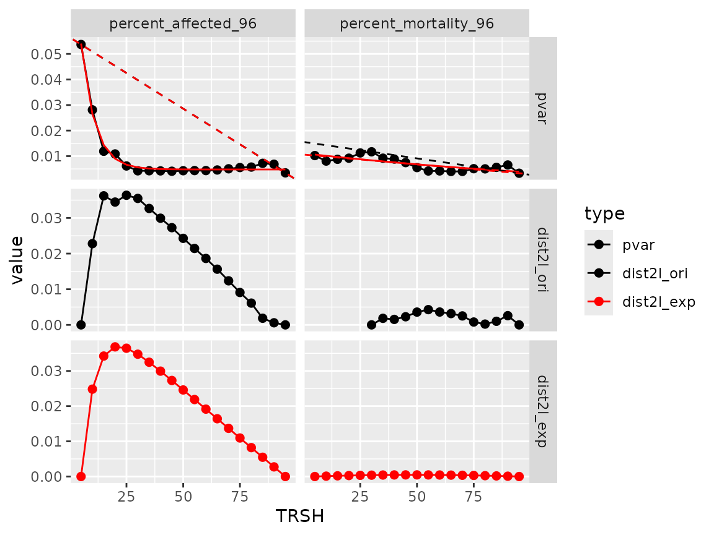

Practical applications using Rcurvep package
Source:vignettes/practical_rcurvep.Rmd
practical_rcurvep.RmdInstall the package
# the development version from GitHub:
# install.packages("devtools")
devtools::install_github("moggces/Rcurvep")
devtools::install_github("moggces/Rcurvep", dependencies = TRUE, build_vignettes = TRUE)Load the sample dataset
zfishdev a subset of data from a 32-compound screen using zebrafish developmental assays. Our goal is to decide whether a compound is active in a particular toxicity endpoint. The active is determined by if the responses is monotonic (as the increase of concentration). In addition, the maximum response has to be larger than a certain response threshold.
# More details of the dataset can be found ?zfishdev.
data(zfishdev)
str(zfishdev)
#> Classes 'tbl_df', 'tbl' and 'data.frame': 96 obs. of 5 variables:
#> $ endpoint: chr "percent_affected_48" "percent_affected_48" "percent_affected_48" "percent_affected_48" ...
#> $ chemical: chr "Caffeine|58-08-2" "Caffeine|58-08-2" "Caffeine|58-08-2" "Caffeine|58-08-2" ...
#> $ conc : num -4 -3.82 -3.52 -3.3 -3.12 -3 -2.82 -2.7 -7 -6.52 ...
#> $ n_in : int 0 2 5 15 15 15 15 15 0 2 ...
#> $ N : int 15 15 15 15 15 15 15 15 15 15 ...Rcurvep method
The Rcurvep is a tool to decide whether responses are monotonic (as
the increase of concentration) based on a set of pre-defined parameters.
The default setting of those parameters can be obtained through
curvep_defaults(). The TRSH is the
threshold parameter, below which, all responses are considered as noise.
This threshold is particularly important for toxicologists, since the
point-of-departure (POD) can be defined as the concentration at which
response equivalent to this threshold. The threshold can also be called
as benchmark response (BMR).
curvep_defaults()
#>
#> curvep configuration parameters
#> TRSH: [15]
#> RNGE: [-1e+06]
#> MXDV: [5]
#> CARR: [0]
#> BSFT: [3]
#> USHP: [4]
#> TrustHi: [TRUE]
#> StrictImp: [TRUE]
#> DUMV: [-999]
#> TLOG: [-24]
#> seed: [NA]
#>
#For details of parameters, see ?curvep.Run Rcurvep on datasets using combi_run_rcurvep()
Since zfishdev does not contain a column with responses,
create_dataset() can be used to generate the responses for
this particular type of data. However, this function is already
incorporated.
identical(
combi_run_rcurvep(zfishdev, RNGE = 1000000),
combi_run_rcurvep(create_dataset(zfishdev), RNGE = 1000000)
)
#> [1] TRUERun Rcurvep when there is a preferred BMR
If there is a preferred BMR, you can run the dataset using the threshold. The act_set in the result contains potency and efficacy information of the concentration-response data (aka curve).
out <- combi_run_rcurvep(
zfishdev,
TRSH = 25, # BMR = 25
RNGE = 1000000 # increasing direction
)
out
#>
#> 4 endpoint(s) and 3 chemical(s)
#> Components in the list: result, config
#> Components in the result: act_set, resp_set, fp_set
#>
out$config
#>
#> curvep configuration parameters
#> TRSH: [25]
#> RNGE: [1e+06]
#> MXDV: [5]
#> CARR: [0]
#> BSFT: [3]
#> USHP: [4]
#> TrustHi: [TRUE]
#> StrictImp: [TRUE]
#> DUMV: [-999]
#> TLOG: [-24]
#> seed: [NA]
#> Summarize activity data from Rcurvep
The results of the summary is saved in the tibble, act_summary.
sum_out <- summarize_rcurvep_output(out)
sum_out
#>
#> 4 endpoint(s) and 3 chemical(s)
#> Components in the list: result, config, act_summary
#> Components in the result: act_set, resp_set, fp_set
#> Add confidence interval for activity data from Rcurvep
The confidence interval is calculated using simulated datasets
created by bootstrapping the original responses. By setting the
parameter, n_samples, number of curves are simulated.
The same summarize_rcurvep_output() can be used to
summarize the results.
set.seed(300)
out <- combi_run_rcurvep(
zfishdev,
n_samples = 10, # often 1000 samples are preferred
TRSH = 25,
RNGE = 1000000,
keep_sets = "act_set"
)
sum_out <- summarize_rcurvep_output(out)
sum_out
#>
#> 4 endpoint(s) and 3 chemical(s)
#> Components in the list: result, config, act_summary
#> Components in the result: act_set
#> Run Rcurvep when an optimal/preferred BMR is unknown
The optimal BMR may be defined as the threshold at which the potency estimation is more accurate. The concept can be translated as the lowest threshold (which gives the highest potency), at which a decrease of variance in potency estimation is stabilized. By using the simulated datasets, the pooled variance across chemicals at a certain threshold can be estimated.
# The combi_run_rcurvep() can be used for a combination of Curvep parameters.
# finishing the code will take some time.
set.seed(300)
data(zfishdev_all)
zfishdev_act <- combi_run_rcurvep(
zfishdev_all,
n_samples = 100,
keep_sets = c("act_set"),
TRSH = seq(5, 95, by = 5), # test all candidates, 5 to 95
RNGE = 1000000,
CARR = 20
)Estimate the BMR
For the two endpoints, BMR = 25 (in bmr_ori column) is suggested for the percent_affected_96 endpoint with an OK comment but for the percent_mortality_96 endpoint, check is noted.
data(zfishdev_act)
bmr_out <- estimate_dataset_bmr(zfishdev_act, plot = FALSE)
bmr_out$outcome
#> # A tibble: 2 × 12
#> RNGE CARR endpoint bmr_ori p1_ori p2_ori bmr_exp p1_exp p2_exp cor_exp_fit
#> <dbl> <dbl> <chr> <dbl> <int> <int> <dbl> <int> <int> <dbl>
#> 1 1000000 20 percent… 25 1 19 20 1 19 0.994
#> 2 1000000 20 percent… 55 6 19 50 1 19 0.789
#> # ℹ 2 more variables: cor_lm_fit <dbl>, qc <chr>Display the diagnostic curves for BMR estimation
It turns out for the percent_mortality_96 endpoint, the shape is not in the right form (as the percent_affected_96 endpoint).
plot(bmr_out)
#> $`1`
Run parametric fitting on datasets
Since zfishdev does not contain a column with responses,
create_dataset() needs to be used to generate the responses
for this particular type of data. Unlike
combi_run_rcurvep(), create_dataset() has to
be called explicitly.
# set the preferred direction as increasing hill_pdir = 1
# this is to use the 3-parameter hill
fitd1 <- run_fit(create_dataset(zfishdev), hill_pdir = 1, modls = "hill")
fitd1
#>
#> 4 endpoint(s) and 3 chemical(s)
#> Components in the list: result, result_nested
#> Components in the result: fit_set, resp_set
#>
# can also use the curve class2 4-parameter hill with classification SD as 5%
# please ?fit_cc2_modl to understand curve classification
fitd2 <- run_fit(create_dataset(zfishdev), cc2_classSD = 5, modls = "cc2")
fitd2
#>
#> 4 endpoint(s) and 3 chemical(s)
#> Components in the list: result, result_nested
#> Components in the result: fit_set, resp_set
#> Summarize parametric fitting results using a preferred BMR
The results of the summary is saved in the tibble, act_summary.
# thr_resp will get BMC10% and perc_resp will get EC20%
# hill with 3-parameter
fitd_sum_out1 <- summarize_fit_output(fitd1, thr_resp = 10, perc_resp = 20, extract_only = TRUE)
# cc2 (hill with 4-parameter + curve classification)
fitd_sum_out2 <- summarize_fit_output(fitd2, thr_resp = 10, perc_resp = 20, extract_only = TRUE)Inspect concordance between two parametric fits
#EC20% concordance (when both methods provide values)
cor(fitd_sum_out1$result$act_set$ECxx, fitd_sum_out2$result$act_set$ECxx, use = "pairwise.complete.obs")
#> [1] 0.9941618
#BMC10% (when both methods provide values)
cor(fitd_sum_out1$result$act_set$POD, fitd_sum_out2$result$act_set$POD, use = "pairwise.complete.obs")
#> [1] 0.9888046
#EC50 (when both methods provide values)
cor(fitd_sum_out1$result$act_set$EC50, fitd_sum_out2$result$act_set$EC50, use = "pairwise.complete.obs")
#> [1] 0.9994521
# check number of curves consider as active by both
sum(fitd_sum_out1$result$act_set$hit == 0) # no fit
#> [1] 7
sum(fitd_sum_out2$result$act_set$hit == 4) # cc2 = 4 (inactive)
#> [1] 7Add confidence interval for activity data from parametric fitting (currently is only available to 3-parameter Hill equation from tcpl)
fitd <- run_fit(create_dataset(zfishdev), hill_pdir = 1, n_samples = 10, modls = "hill")